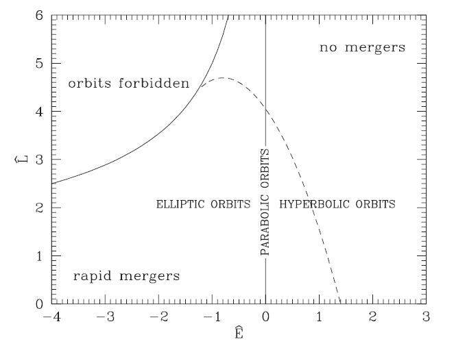
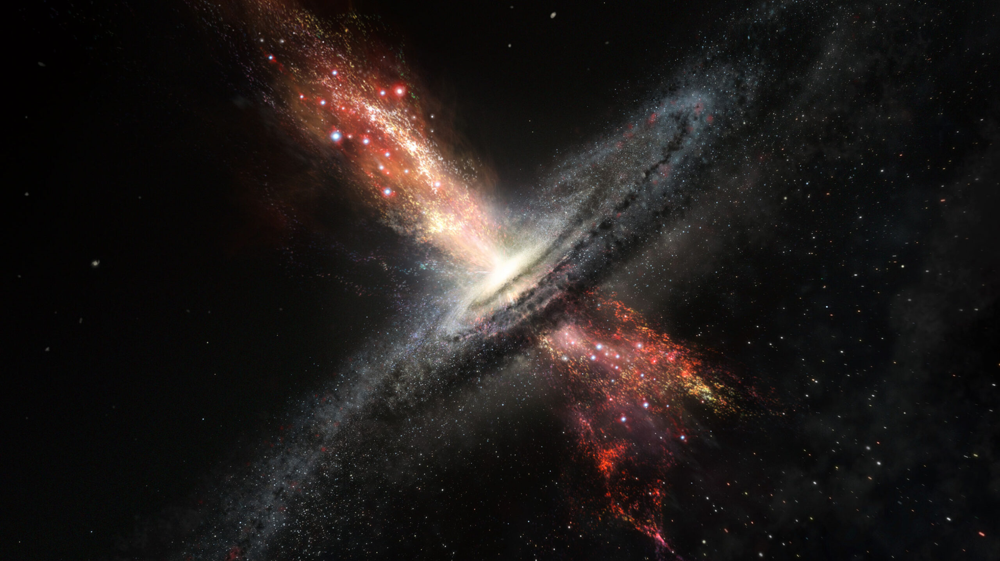

Theory
If the orbital energy is sufficiently low, close encounters between two systems can lead to a merger.
What are AGN's ?
Most huge galaxies have a supermassive black hole at their center, which can be millions to billions of times more massive than the Sun. The host galaxy bulge or spheroid mass is correlated with the black hole mass.Most huge galaxies have a supermassive black hole at their center, which can be millions to billions of times more massive than the Sun. The host galaxy bulge or spheroid mass is correlated with the black hole mass.This central blackhole and high SFR in the center make up AGN.

Criterion for Mergers
Consider a simple case in which the two galaxies are identical, non-rotating and spherical. Suppose that each galaxy has mass $M$ and median radius $r_{med}$. The internal mean-square velocity is $\left\langle v^2 \right\rangle = \frac{aGM}{r_{med}}$, where $a$ is a parameter of order unity that depends on the density distribution of the galaxy.We can completely specify this encounter by using
- $E_{orb}$ -the orbital energy per unit mass
- $L$ the orbital angular momentum per unit mass
Plotting $\hat{E}$ and $\hat{L}$ results in the above plot which can be analysed for the conditions for merger.In principle, any bound orbit ahould eventually merge because the tidal interaction between the two galaxies which transfers energy from orbital interaction to internal energy.
There are two important conclusions to draw from the above plot.
- Mergers are only expected to be effective when$\hat{E} \lesssim 1$ . If the galaxies are moving in a system with velocity dispersion $\sigma$, then the specific orbital energy for a typical encounter is $E_{orb} \sim \sigma ^2$. Thus, mergers are only effective in systems with a velocity dispersion smaller than or comparable to the internal velocities of the orbiting galaxies. Hence galaxy mergers can occur effectively in groups of galaxies, but not in rich clusters.
- For given orbital energy and angular momentum, mergers are expected to be more effective for more extended objects . This means that it is crucial to take account of the fact that galaxies are believed to reside in extended dark matter halos. Binney & Tremaine (1987)
Merger Demographics
Merger outcomes are highly dependent on the properties of the merging galaxies. From numerical simulations, these 4 properties are primarily:
- The progenitor mass ratio $q \equiv \frac{M_1}{M_2}$, where $M_1 \geq M_2$. If $q \leq 4$ ($q \geq 4$) one speaks of a major (minor) merger. As a result, a small merger's remnant frequently resembles its most significant progenitor.
- The morphology of the merging galaxies.Galactic disks are more easily destroyed compared to spheroids, and are easier to destroy, especially when $q$ is small
- The gas mass fractions of the merging galaxies.Gases respond to both pressure and gravitational forces and can also lose energy through radiative cooling. Therefore, mergers between gas-rich progenitors (often called ‘wet’ mergers) and gas-poor progenitors (‘dry’ mergers). Have different end results.
- The orbital properties such as the orbital energy and angular momentum determine the impact on the merger outcome.
The Connection between Mergers, Starbursts and AGN
An important aspect of interactions in general, is that they may be responsible for triggering two important phenomenons in galaxies:
- Starburst
- AGN activity
A simple application of the Schmidt law of star formation suggests that this gas may form stars at an extremely high rate, giving rise to a nuclear starburst. In addition, if some of the nuclear gas can continue to lose angular momentum, it may be able to fuel or even form a central black hole, resulting in an active galactic nucleus.
All ULIRGs, show signs of merger interactions, whcih include presence of shells, tidal tails and complex velocity fields. (Joseph & Wright, 1985).